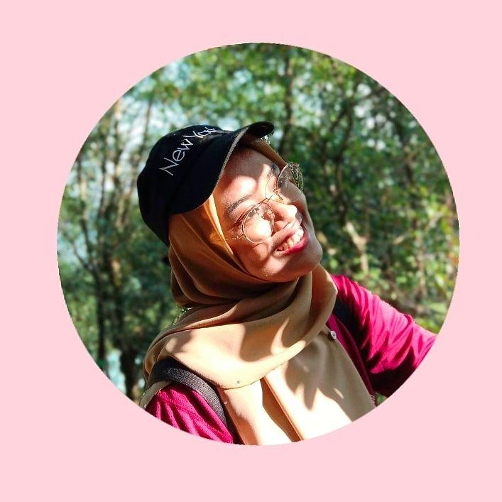

Dyya | Stylist

More than ten years ago, Dyya started styling our customers in her hometown of Kulim, Kedah. She moved to the big city later,
where she started to tune in on her art and became proficient in bald fades. Dyya enjoys continuously learning fresh tricks and loves to share her experience
with customers so that when outside of her chair, they can better care for their hair.
Naddy | Stylist
At the age of 17, Naddy, a native of Penang Island, started cutting hair for her family members, but decided to get trained and find a corporate career.
She discovered after working a few desk jobs that the hair industry was calling her! She attended Barber's School and later received a license from her teachers.
Specializing in all hair textures, Naddy provides perfect fades and scissor cuts.
Lea | Stylist
Lea has been living in United States for almost 8 years and enjoys working at the best barbershop in the city, originally from Taiping, Perak. After moving back to Malaysia,
Lea did a partnership with Dyya, Naddy and Kyya. Lea's passions include ensuring that you get a haircut when you want it and with whom you want it; she also loves producing
films, photography, and percussion teaching.